A pack of construction paper and a pair of scissors is really all you need for a wonderful afternoon together. DIY crafts with paper are some of the most accessible projects you can do with kids because the materials are inexpensive, the setup takes almost no time, and the range of things you can make is genuinely endless. Whether your child is two or ten, there is something on this list that will hold their attention and leave them proud of what they made. 🎨
This collection brings together 20 of our favorite DIY crafts with paper for families. Every project uses simple supplies you likely already have at home, and every single one has been chosen because it is beginner-friendly, low-stress, and fun to do together. From twirling pinwheels to sailing paper boats, each idea turns a plain sheet of paper into something your child will want to show off.
What You'll Need
Most of these DIY paper crafts share the same handful of supplies, so one quick gather will set you up for the whole list.
- Crayola Construction Paper (240 sheets, 12 colors), a generous assorted pack that covers every color you will need across all 20 projects.
- Elmer's Disappearing Purple Glue Sticks (30-count), applies purple so kids can see it, dries clear, and washes off little hands easily.
- Fiskars 5" Pointed-Tip Scissors for Kids (ages 4+), the most trusted kids' scissors brand with a blade angle that makes cutting clean and safe.
- Crayola Broad Line Washable Markers (10-count), bright classic colors that work beautifully on construction paper and wash off skin and clothing.
- Clear tape or washi tape, for securing folds and adding color to finished crafts.
- Pencil, for tracing shapes and marking folds before cutting.
- Hole punch and yarn or string, needed for a few hanging and wearable projects on the list.
20 DIY Paper Craft Ideas to Make with Your Kids
1. Paper Chain Garland
Cut strips of construction paper and loop them into interlocking rings, gluing or taping each one closed before threading the next through. Kids can mix colors in a pattern or go wild with a rainbow sequence. A paper chain garland is one of the most satisfying DIY crafts with paper for younger children because every loop they finish visibly extends the chain. Hang it across a window, a doorway, or the back of a chair for an instant party feel.
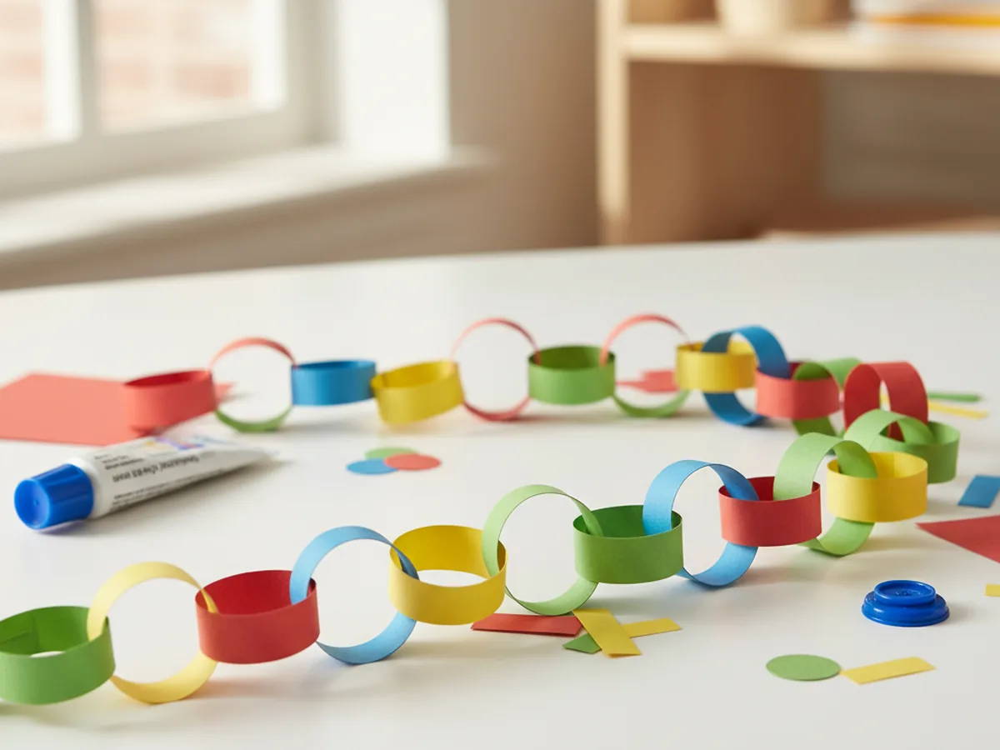
2. Paper Fortune Teller
Fold a square of paper diagonally both ways, then fold each corner to the center twice and tuck your fingers inside to form the classic origami fortune teller game. Write colors on the outer flaps, numbers on the inner flaps, and silly fortunes under each inner flap. Kids love this one because it becomes a toy the moment it is finished. It is one of those DIY crafts with paper that kids make once and then immediately want to make five more to hand out to friends.
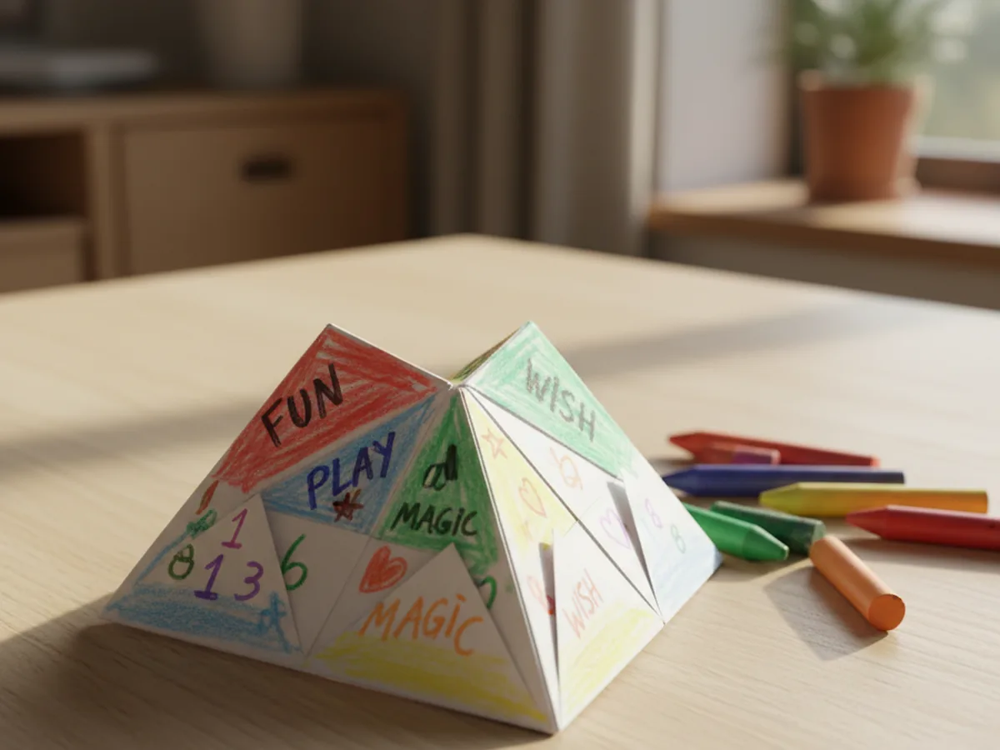
3. Paper Fan
Take a full sheet of construction paper and accordion-fold it from one end to the other in equal pleats about half an inch wide, then pinch one end together and secure it with tape to form the handle. Let your child decorate the paper with markers or crayons before folding so the finished fan reveals a colorful pattern when it opens. Paper fans are a timeless DIY craft with paper that works year-round and takes less than fifteen minutes from start to finish. They make a wonderful gift for grandparents too.
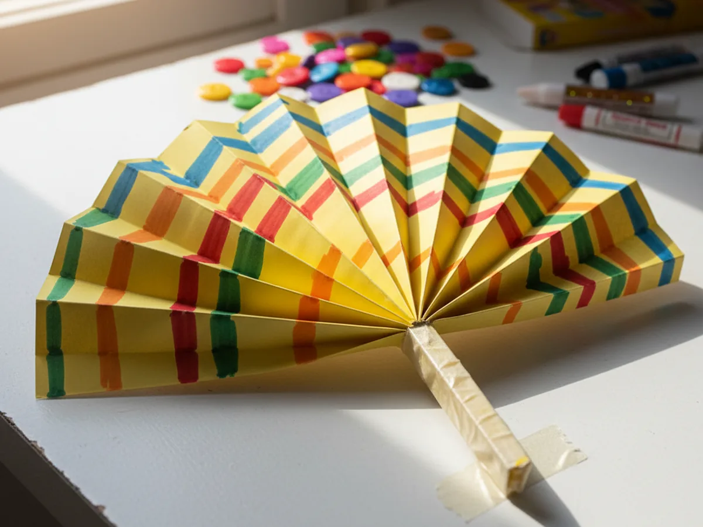
4. Paper Crown
Cut a long strip of cardstock about three inches tall and draw a row of points or scallops along one edge, then cut them out. Fit the strip to your child's head and tape or staple the ends together. Let them decorate the crown with markers, sticker gems, or small paper shapes before wearing it. A paper crown is a simple DIY craft with paper that feels genuinely magical for young kids and takes almost no time at all. It also makes a fantastic birthday-morning surprise.
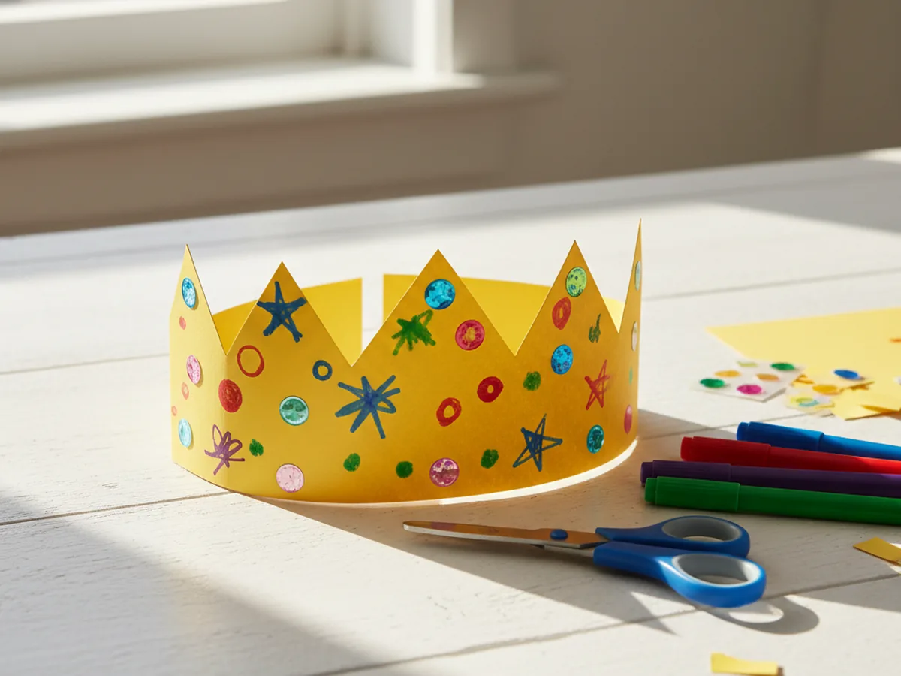
5. Paper Airplane
Fold a sheet of plain white or colored paper into a classic dart airplane using the standard sequence of folds down the center, then fold the wings down evenly and give the nose a slight upward curl for a longer flight. Let your child draw windows, a logo, and passenger faces on the side before the final fold. Paper airplanes are endlessly replayable DIY crafts with paper because every slight variation in the fold produces a different flight path. Set up a launch zone in the hallway and see whose design flies the farthest.
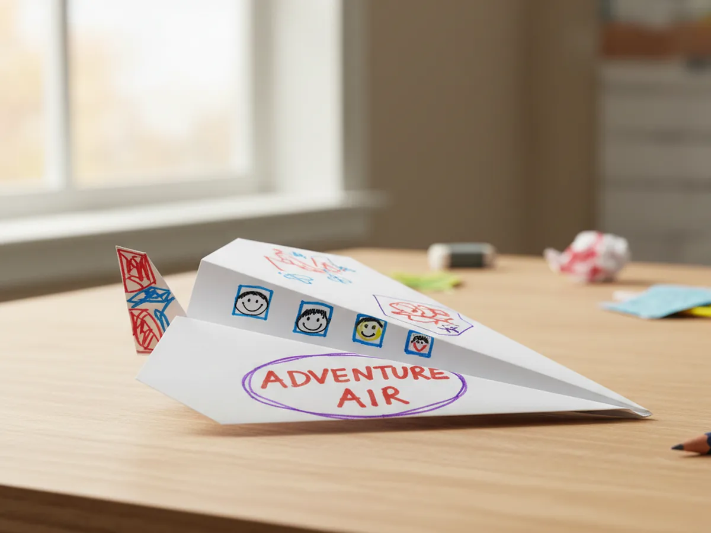
6. Paper Butterfly
Cut two matching wing shapes from a sheet of brightly colored construction paper and use markers to draw patterns, spots, or swirls on the wings. Accordion-fold a narrow strip of contrasting paper for the body, then pinch the wings together at the center and secure the folded body strip around the middle with tape. Curl two short strips of paper over a pencil to make antennae and glue them at the top of the body. Paper butterflies are beautiful DIY crafts with paper that look impressive but take only about twenty minutes to complete. ✂️
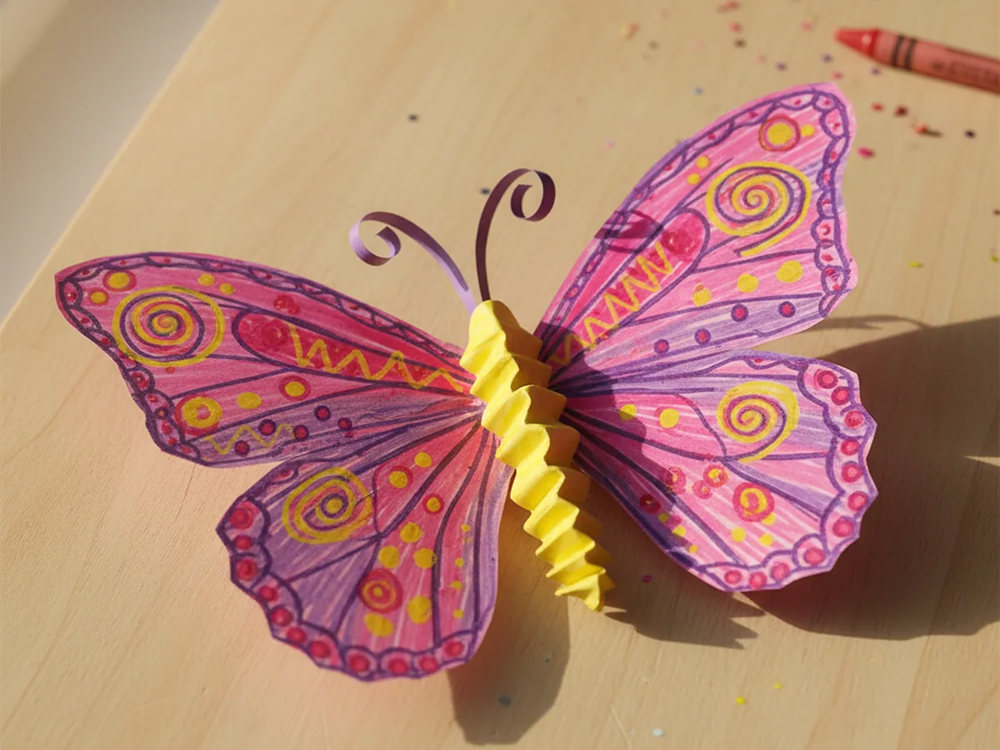
7. Paper Flower Bouquet
Cut simple five-petal flower shapes from several colors of construction paper and glue a contrasting circle at the center of each one. Tape each flower to a green paper-wrapped straw or a thin strip of green paper rolled into a stem, then gather all the stems together and wrap them with a ribbon or a strip of paper. A paper flower bouquet is a wonderful DIY craft with paper for any occasion and never wilts or loses its color. Kids often ask to keep making more flowers until the whole table is covered.
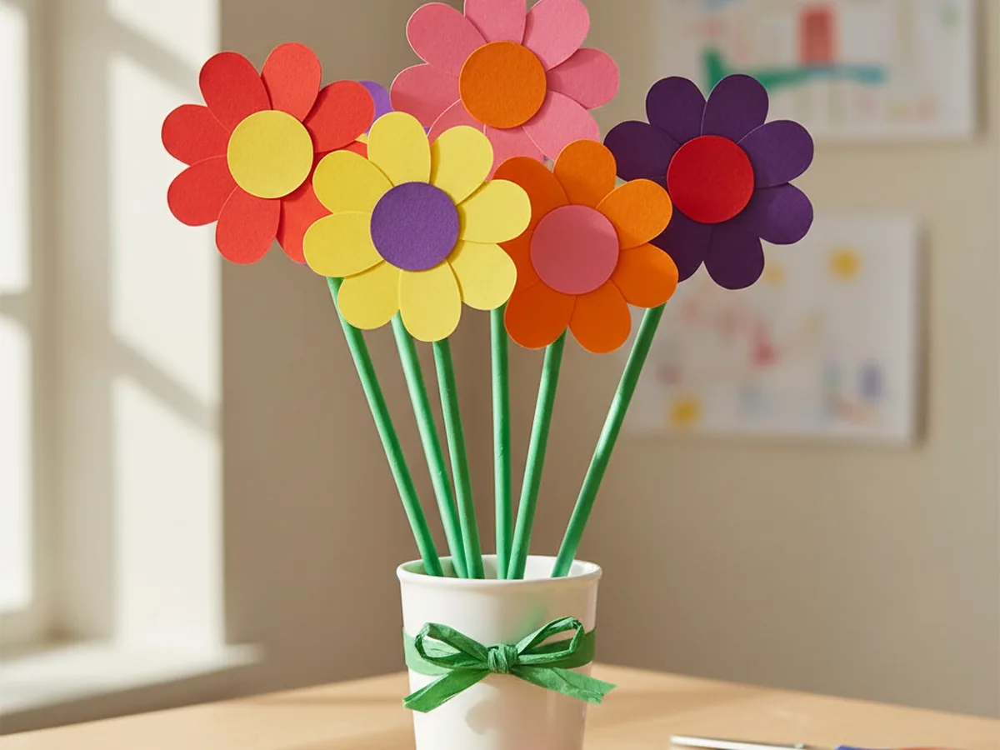
8. Monster Corner Bookmark
Fold a square of construction paper in half diagonally to make a triangle, then fold the two side corners up to meet the top point, creating a pocket. Tuck those flaps under the triangle to form the corner bookmark shape. Draw a monster face on the front of the pocket with markers, adding teeth, googly eyes, horns, or fur details. This is one of those DIY crafts with paper that book-loving kids adore because they get to make a little character and use it every day.
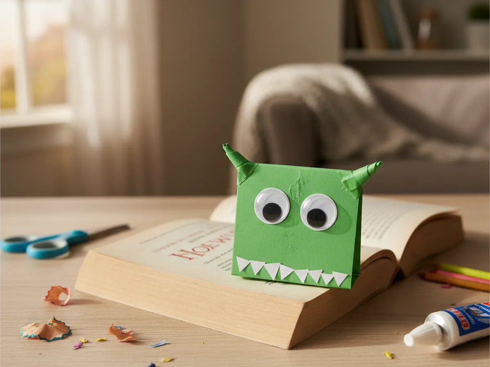
9. Paper Lantern
Fold a sheet of construction paper in half lengthwise and cut a row of parallel slits along the fold, stopping about an inch from the open edges. Unfold the paper, curve it into a cylinder, and tape the short ends together so the slits bow outward into a lantern shape. Add a paper handle across the top for hanging. Paper lanterns are lovely DIY crafts with paper that can be made in any color for any season. Cluster several together in different sizes and hang them near a window for a beautiful display.
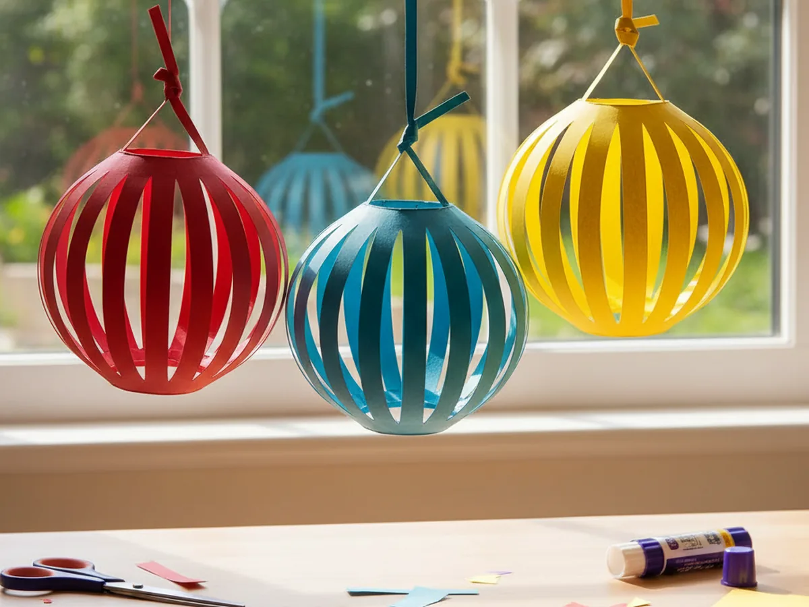
10. Paper Pinwheel
Cut a square of brightly colored paper and make four diagonal cuts from each corner toward the center, stopping about an inch from the middle. Fold every other tip toward the center and secure all the layers together with a brad pushed through the middle. Attach the brad to a pencil or wooden skewer through the back so the pinwheel can spin freely. Paper pinwheels are classic DIY crafts with paper that turn into real outdoor toys once they are done. Even a light breeze sets them spinning, which thrills young kids every single time.
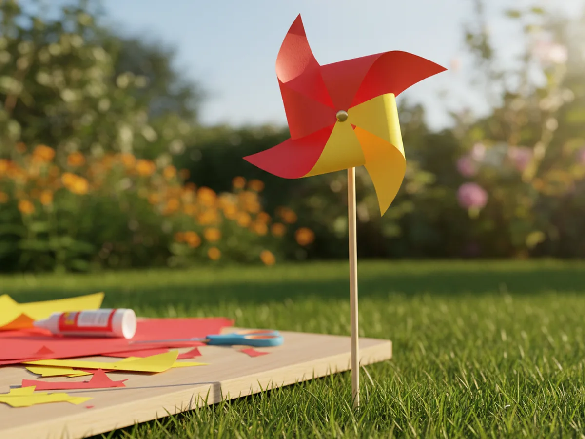
11. Paper Woven Heart
Cut two strips of paper in contrasting colors, each one the same width, and weave them together into a simple checkerboard pattern, securing the ends with tape or glue. Cut the finished woven mat into a heart shape or fold it as a Danish-style woven heart pocket. Paper weaving is a wonderfully calm DIY craft with paper that builds fine motor skills while producing something genuinely pretty. Older kids often get absorbed in trying more complex weave patterns once they master the basic over-under technique.
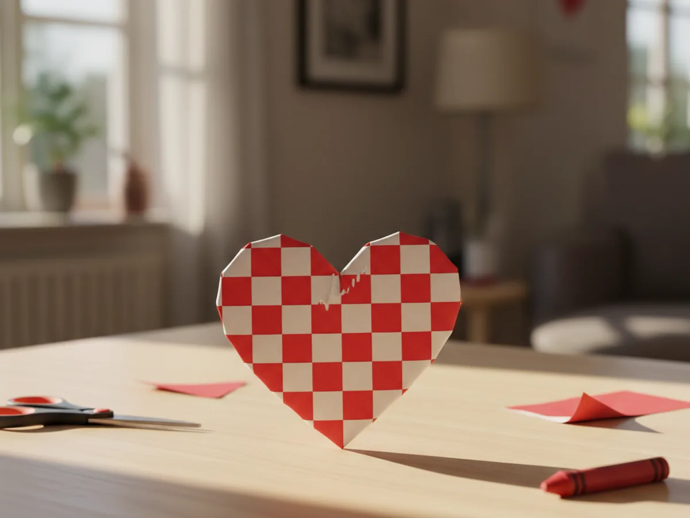
12. Paper Bag Puppet
Fold the bottom flap of a small paper lunch bag to form the puppet's mouth, then draw or glue on eyes, a nose, hair, ears, and any other details your child imagines. Slip your hand inside to open and close the mouth. Paper bag puppets are wonderfully open-ended DIY crafts with paper because each child makes something completely different based on their own imagination. Once the puppets are finished, act out a short story together for an afternoon that turns into a real memory.
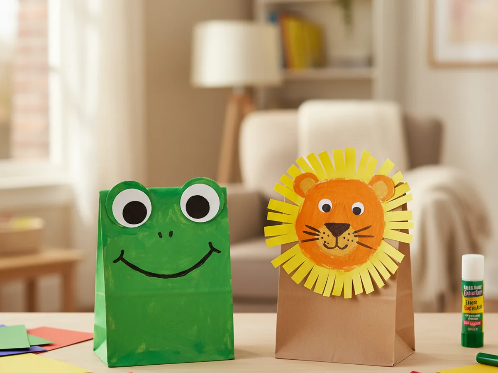
13. Paper Roll Binoculars
Tape two toilet paper rolls side by side and wrap them together with a sheet of construction paper, then punch a small hole on each outer side and thread a length of yarn through both holes to make a neck strap. Let your child decorate the outside with markers and stickers. Paper roll binoculars spark outdoor adventure play and are one of those DIY crafts with paper where the play value starts the moment the craft is done. Take them outside for a nature walk and let your child explore the backyard or park as an explorer.
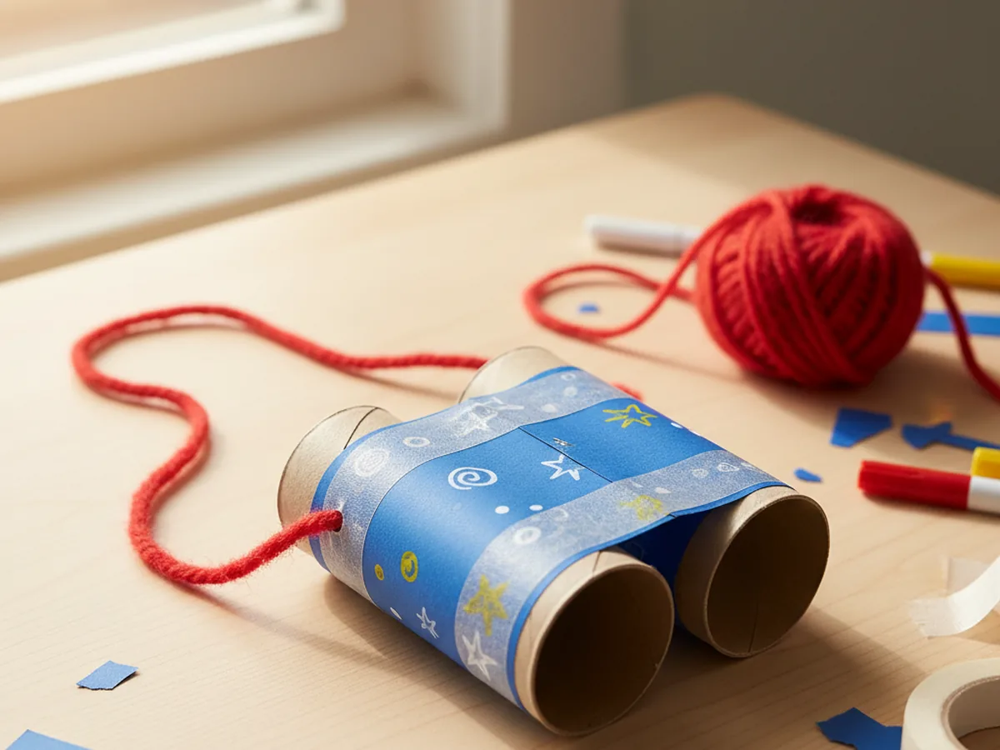
14. Paper Mosaic
Draw a simple bold outline on a background sheet such as a sun, a house, a fish, or your child's initial, then tear or cut small squares and rectangles from several colors of construction paper and glue them inside the outline to fill in the shape. Leave small gaps between the pieces to create the classic mosaic tile effect. Paper mosaic is a wonderfully meditative DIY craft with paper that suits all ages and produces something that looks genuinely artistic hung on the fridge. Young children can tear pieces freely while older kids enjoy cutting precise squares.
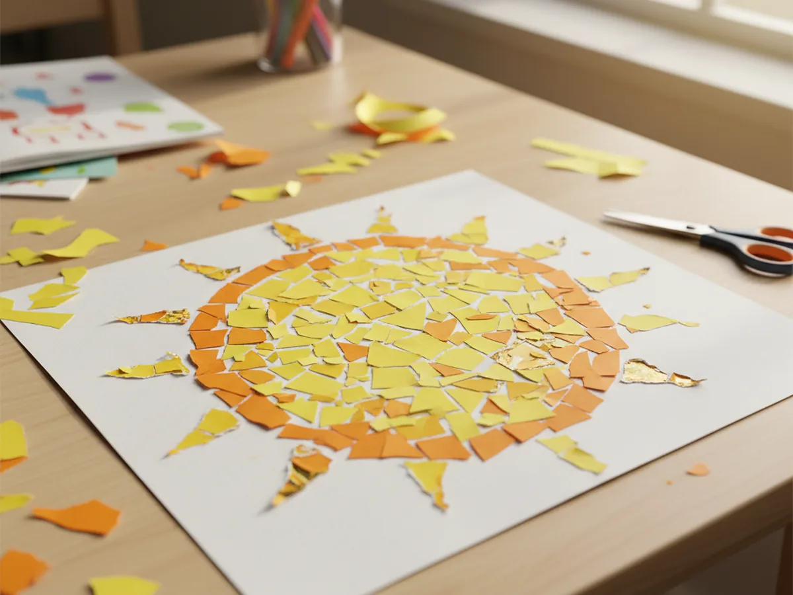
15. Accordion Fold Snake
Cut two long strips of different colored paper, glue one end of each strip together at a right angle, then alternate folding them over each other to build an accordion spring body that stretches and bounces. Cut a small head from one color and glue it at one end, adding marker eyes and a forked tongue. Accordion fold snakes are irresistible DIY crafts with paper for young children who love watching the springy body bounce around. They also make excellent props for pretend play and storytelling.
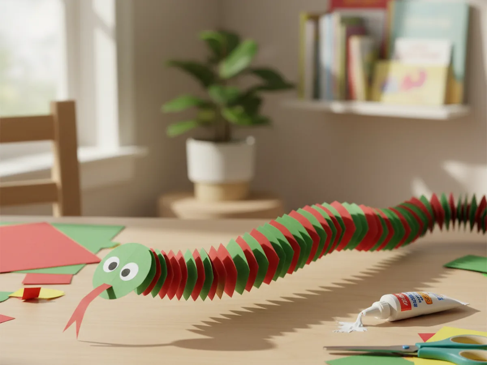
16. Paper Star Decoration
Cut five equal strips of paper and form each one into a pentagon loop by folding a five-pointed star shape into the strip, tucking the end under. Pinch each point gently to sharpen the tips of the star. A single 3D paper star looks beautiful on its own, and a collection of them in different sizes and colors makes a stunning garland or mobile. This is a more satisfying DIY craft with paper than it looks, and slightly older kids often find it impossible to stop once they have mastered the folding sequence.
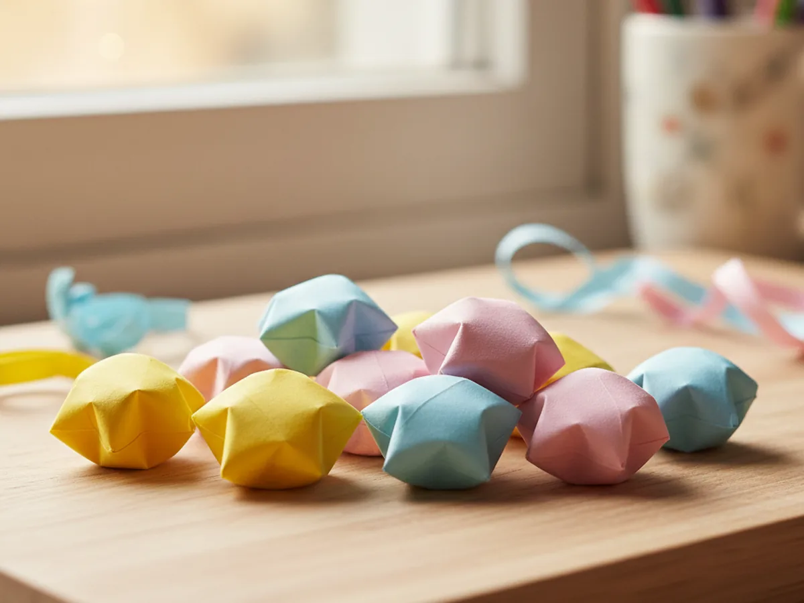
17. Paper Kite
Cut a large diamond shape from a sheet of construction paper and reinforce it with two paper or craft stick struts across the width and length. Punch a small hole at the bottom point and thread a long piece of yarn through for the kite string, then decorate the kite with markers, strips of tissue paper, and a paper bow tail. Paper kites are celebratory DIY crafts with paper that feel special to make and even better to run with outside on a breezy day. Even if it does not fly perfectly, the fun of trying is the whole point.
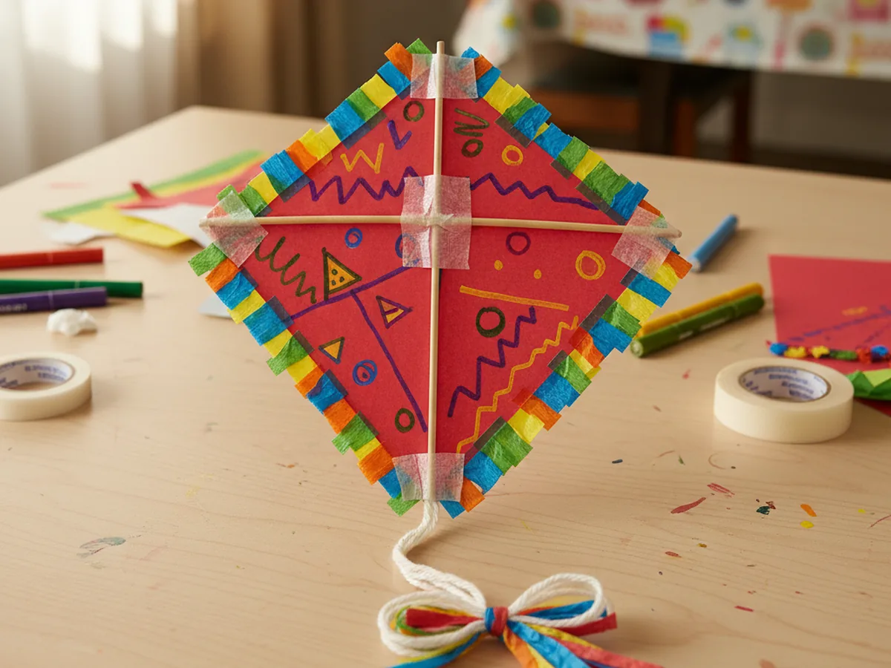
18. Paper Boat
Start with a rectangular sheet of paper, fold it in half width-wise, then fold the top corners down to meet the center crease and fold the bottom flaps up on each side. Open the resulting triangle from the bottom and press it flat into a square, fold the bottom corners up again, then open and flatten once more and pull the sides apart to reveal a little boat. Paper boats float surprisingly well in a bowl of water or a puddle. They are one of those DIY crafts with paper that involve a satisfying sequence of folds, followed by the genuine thrill of watching your creation float.
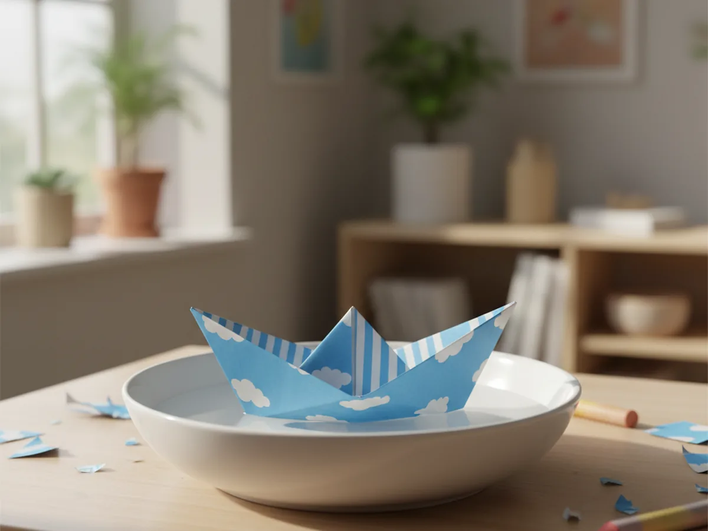
19. Paper Spiral Snail
Draw a large spiral on a circle of construction paper, then carefully cut along the spiral line from the outside edge to the center. Hold the center point and let the paper drop into a hanging spiral spring. Glue the bottom of the spiral to a small oval body shape, add a paper head with drawn eyes and antennae, and your snail is complete. Paper spiral snails are charming little DIY crafts with paper that look much more impressive than the amount of effort involved. They can be suspended from a mobile, hung in a window, or simply placed on a shelf.
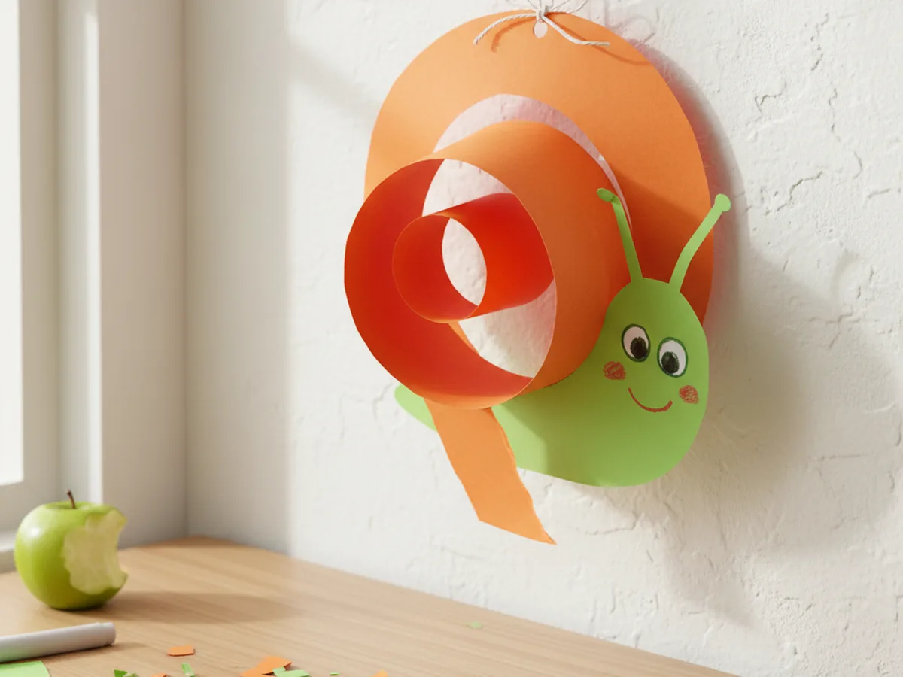
20. Paper Envelope Card
Fold a square sheet of paper by bringing all four corners to the center and creasing each fold sharply, then fold three of the resulting corners back to the center again, securing them with a small sticker or washi tape seal. Tuck a handwritten note or small drawing inside before sealing. Paper envelope cards are a lovely finishing DIY craft with paper for the end of a craft session. Kids love making them for grandparents, friends, or siblings, and the recipient always feels delighted to unfold such a pretty little package.
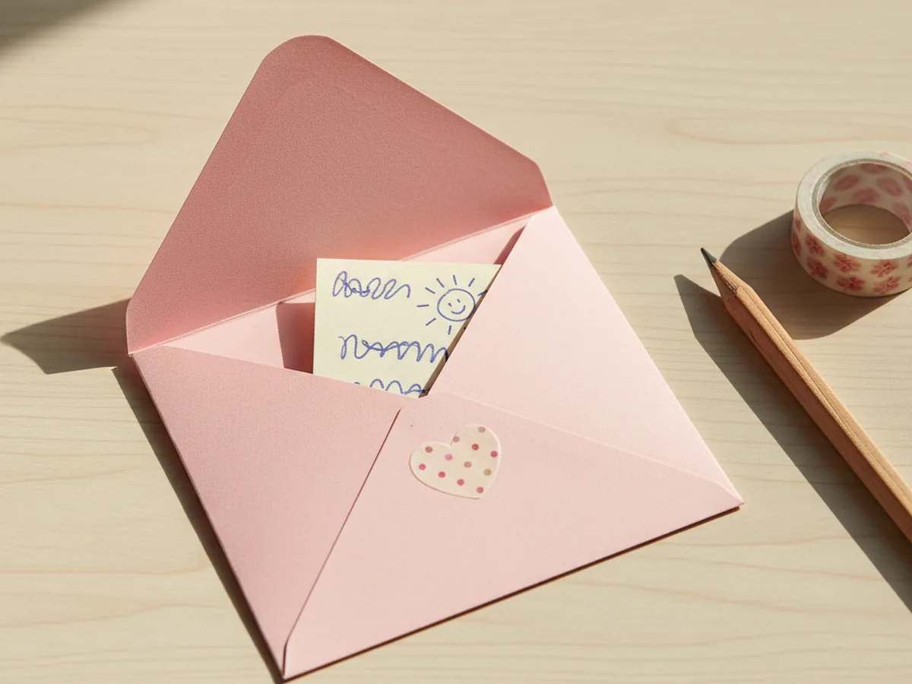
Final Thoughts
A simple pack of paper really can go such a long way. Every idea on this list uses the same basic materials, takes less than an hour, and leaves your child with something they made with their own hands. That combination of easy, quick, and genuinely satisfying is exactly what makes DIY crafts with paper such a reliable choice for family craft time. Pick one idea, clear a small corner of the table, and see where the afternoon takes you. 💛
Whether you end up making a paper boat that floats in the sink or a crown your child refuses to take off at dinner, these little moments of making together are the ones that tend to stick. You do not need a fully stocked craft room or a Pinterest-perfect setup. You just need some paper and a little time with your child.
More Crafts You'll Love
If you enjoyed these DIY paper craft ideas, here are two more lists full of simple and satisfying projects to try next.
Happy crafting, and enjoy every single moment of making together. ✨